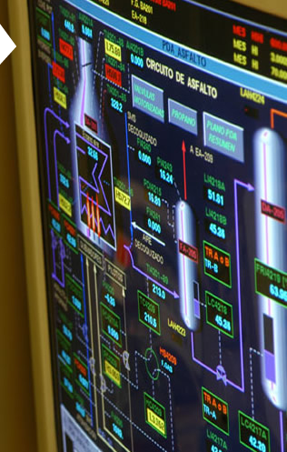

-
"Lo especial de la ingeniería electrónica aplicada a la instrumentación y control de procesos es que permite centrarse en las cuestiones técnicas particulares de la carrera pero a la vez estar muy vinculado con el resto de los aspectos y tener así una visión global de cada proyecto."
-Franco Spizzirri.
- 
Ingeniero Electrónico."Soy ingeniero electrónico, hice la orientación Control de Procesos en la Universidad Nacional de La Plata y actualmente trabajo en la Dirección de Ingeniería de YPF.
Lo que aprendí en la universidad me sirve de fundamento teórico para entender, seleccionar y diseñar diferentes tipos de tecnologías de aplicación a los proyectos que desarrollamos en la industria del petróleo. Todo esto se complementa de manera constante con el trabajo interdisciplinario que desarrollamos con profesionales de otras carreras, principalmente de ingeniería química, mecánica y eléctrica.
Lo especial de la ingeniería electrónica aplicada a la instrumentación y control de procesos es que permite centrarse en las cuestiones técnicas particulares de la carrera pero a la vez estar muy vinculado con el resto de los aspectos y tener así una visión global de cada proyecto."
-Franco Spizzirri.
-
Ingeniero Electrónico.